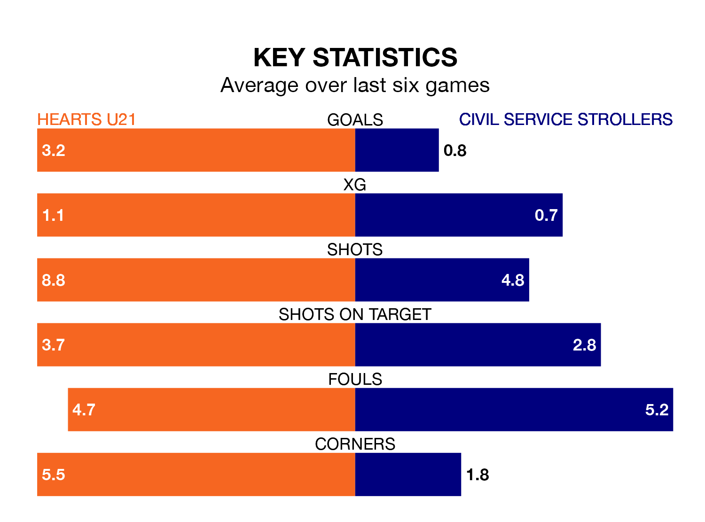

Civil Service Strollers visit Hearts U21 at the Ainslie Park Stadium on late Friday on the back of three consecutive wins in Highland and Lowland Football Leagues.
Civil Service Strollers have picked up nine points from their last six games, and they face a Hearts side who have also won their last two matches, and collected 13 points from the last possible 18.
With 47 goals in 18 games so far this season, Hearts U21 are the league's second-highest scorers with 2.6 goals per game. And they are conceding fewer than average, letting in 22 goals at a rate of 1.2 per game.
Civil Service Strollers, meanwhile, are below average scorers, with 1.4 goals per game, compared to a league average of 1.7. They have conceded 1.2 goals per game.
Hearts are second in the table after 18 games, of which they have won 10 and drawn six, earning 36 points.
The away side are nine places behind the hosts in 11th, with eight wins and three draws putting them on 27 points.
Hearts U21's last match was on November 25, a 4-2 win against East Kilbride, with Mackenzie Kirk (two), Bobby McLuckie and Callum Sandilands getting the goals for Hearts.
Civil Service Strollers beat Berwick Rangers 1-0 last time out, on November 11, with Conrad Balatoni on the scoresheet.
